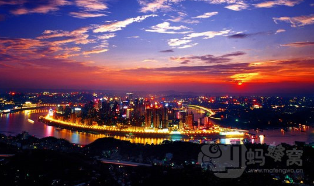
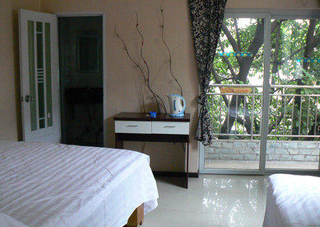
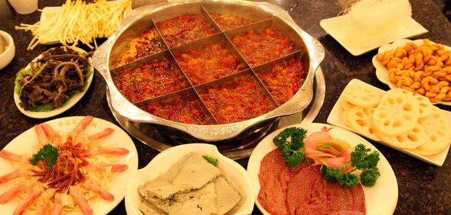
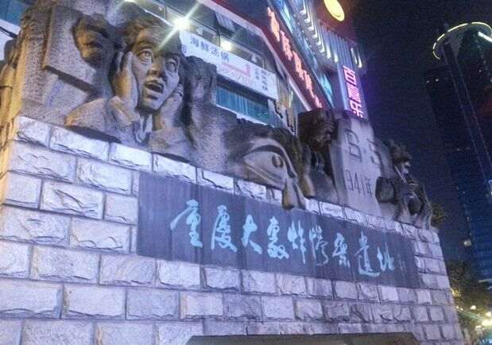

Traffic guidance
Chongqing jiangbei international airport——Chongqing university of posts and telecommunications Public transportation route 1:Yubei district in chongqing airport (440 meters on foot) - > chongqing jiangbei airport station (take railway line 3 to fish hole direction, after 25 station) - > Sigongli station fourth export (1 minutes’ walk) - > Station Road Sigongli (20 minutes by taix, about 25 yuan) - > chongqing university of posts and telecommunications (old school gate). Total expected 1 hour 50 minutes.
Public transportation route 2:Yubei district in chongqing airport (760 meters on foot) —>Bijin station（take railway line 3 to the direction of Chaotianmen,after 23 stations）—>Nanping station the 5th export(930 meters’ walking)—>Nanping dong station（take bus 347 or 346）—>chongqing university of posts and telecommunications (old school gate).Total expected 2 hour 10 minutes.
Public transportation route 3:Chongqing north train station—>hongqing north train station south square(railway) —> Lianglukou —> Caiyuanba bus station（take 347） —> chongqing university of posts and telecommunications (old school gate). Total expected 1 hour 50 minutes.
Taix：Total expected 1 hour 50 minutes. 80 yuan.
Mountain city, chongqing
Chongqing is China's famous historical and cultural city, named as "Yu".It was municipality directly under the central government in 1997. Chongqing is the biggest directive area in our country, the administrative jurisdiction and the most populous municipality directly under the central government. Hot summer climate, with the "fire". In addition, there is the "mountain city" and the "foggy city". Is a super city in western China the most investment potential. Chongqing mountains towering, nature, is a famous tourist city, there are the qutang gorge, wu gorge and magnificent natural scenery; The world cultural heritage -- dazu grottoes; Ocean fishing city, of the ancient battlefield their relationship; The central committee of the communist party of China NaFangJu station, the office of the eighth route army and the gele mountain martyrs cemetery.
-
Accommodation
- Jiefangbei
- Here is the most prosperous in chongqing, the most bustling place.
- Guanyinqiao
- Here is the most prosperous in chongqing, the most bustling place.
- Nanping
- Here is the most prosperous in chongqing, the most bustling place.
-
delicacy
- Xiaomian
- hot
- Hot Pot
- spicy
- Wanza
- tasty
-
interest
- Hongya Hole
- Chongqing's most famous diaojiao building complex is right here, magnificent scenes shows ba-yu traditional architectural features.
- Ciqikou
- Famous ancient town in chongqing, was built in the song dynasty, is the epitome of the ancient city of chongqing jiangzhou and sym.